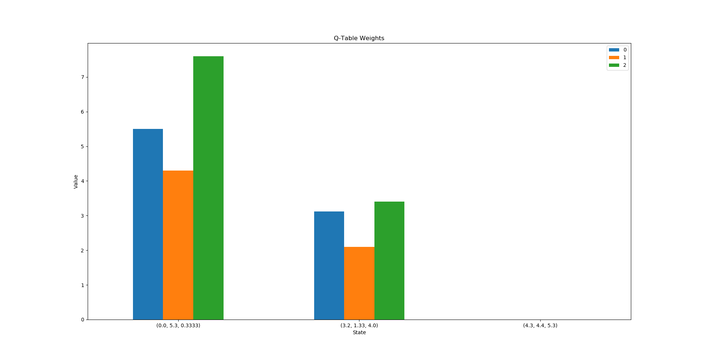

Following my project in the Q-Learning Cart Pole problem, I decided to create an easier way to visualize the Q-Learning process. For this project, the goal was to easily create graphs to display the results and progression from Q-Learning. Using pandas and matplotlib, I created a Python class that makes it easy to save and plot this data. First, I created a way to show the Q-Table results from the learning process. Using the Plot class created for this project, I plotted the resulting Q-Table from my Cart Pole project.
A smaller example with random values is below.
The Plot class also contains a function to print the Q-Table to the console. The second feature of the Plot class is the ability to track reward values across episodes. Applying this to my Cart Pole project yields the following line graph.

Another example with random rewards is below.